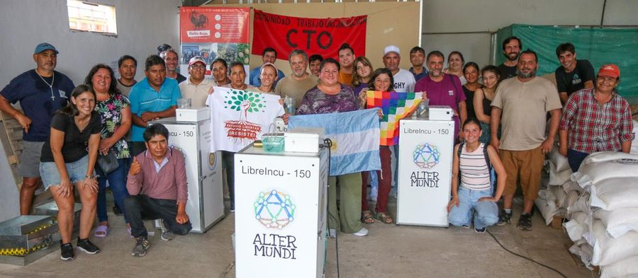
Elaboración y manejo del alimento
Alimentación agroecológica para la avicultura de la AFCI
Línea de carne y línea de huevos ·
Con anexo para la selección de gallinas reproductoras
Cómo leer la cartilla
Cada capítulo conserva el contenido desarrollado en texto y suma apoyos visuales para ubicar conceptos, fórmulas, procesos y aprendizajes a campo. Al final de cada capítulo encontrarás una lámina que resume la información más importante para compartir con otros productores.
Capítulo 1
La triple dependencia y nuestra propuesta
En síntesis
Nos encontramos frente a una triple dependencia del modelo agroindustrial. Genética: el "pollito bebé híbrido" proviene del exterior (Cobb-Vantress y Aviagen), que controlan la genética de todos los pollos industriales. Alimentaria: su dieta requiere precursores de crecimiento, núcleos vitamínicos y minerales de origen industrial, antibióticos de uso preventivo, además del maíz y soja del agronegocio. Tecnológica: las incubadoras comerciales son inaccesibles por su costo o están diseñadas para hobbistas, no para la producción familiar. Esta cartilla trabaja el segundo frente, el del alimento, dentro de una respuesta que ataca los tres a la vez.
En buena parte de la AFCI (agricultura familiar, campesina e indígena) de nuestro país venimos incorporando parcialmente algunas prácticas e insumos agroindustriales —genética, precursores, núcleos, antibióticos, hacinamiento, instalaciones— como estrategia para poder vender pollos y huevos en un mercado cada vez más competitivo y con costos muy difíciles de afrontar. Muchos productores sobreviven vendiendo pollos semiindustriales, en un modelo "sincrético" que mezcla el saber ancestral campesino con otra parte que viene del modelo industrial.
Esto nos da como resultado una carne más cara que la hegemónica. Aunque nuestra producción semiindustrial sea más sana, trae consigo la dependencia de los insumos de la agroindustria. A esto se suma una doble dificultad: en nuestro país no hay una genética de carne apropiada y accesible distinta del híbrido industrial —está el INTA Campero, cada vez más difícil de conseguir con regularidad—, y las incubadoras del mercado son caras o están pensadas para hobbistas.
Un ejemplo claro: cuando por la gripe aviar se prohibió la circulación de aves vivas en nuestro país, esa dependencia genética dejó a la mayoría de la AFCI sin acceso al "bb híbrido" ni a las ponedoras coloradas. Mientras tanto, los grandes concentrados agroindustriales consiguieron protocolos sanitarios para ingresar huevos fértiles y pollitos recién nacidos por vía aérea, y así sostener su cadena genética.
La CTO Traslasierra parte de una experiencia de más de diez años en la cadena avícola: su Cooperativa El Espinillo agrupa a más de treinta familias productoras y cuenta con una fábrica de alimento balanceado, silos y maquinaria, planteles de la Ponedora Negra INTA —elegida por su resistencia al frío y a las condiciones regionales— y el manejo propio de incubadoras. Este camino se apoya en los vínculos surgidos desde la Escuela Popular de Agroecología, EPA La Ramona —en particular el aporte de César Gramaglia (INTA Villa Dolores)—. La EPA La Ramona reúne a organizaciones e instituciones del Valle de Traslasierra y del Conlara (San Luis): CTO, UCATRAS (MNCI), la Casa de Semillas «Somos Semillas», el Frente Popular Darío Santillán y la REDAE (Red de Agroecología del INTA).
Junto a AlterMundi —con su trayectoria en hardware y software libres— y las organizaciones de la UTEP Agraria, hoy la CTO impulsa una transición agroecológica integral que recupera parte del saber ancestral campesino y rediseña parte del modelo industrial para enfrentar las tres dependencias a la vez:
- Genética propia: la Ponedora Negra INTA (Plymouth Rock × Rhode Island Red) para huevos, y un híbrido de carne que cruza gallinas criollas con gallos de razas pesadas.
- LibreIncu: una incubadora de tecnología apropiada, hardware y software libres, diseñada junto a las comunidades, con un 86 % de eclosión a campo.
- Dietas agroecológicas: alimento de elaboración propia, sin núcleo industrial ni antibióticos.
El horizonte es recuperar la soberanía alimentaria y tecnológica: bajar los costos, bajar la dependencia y producir alimentos sanos para nuestros pueblos.
Viene siendo un camino con muchas dificultades, con errores y con hermosos aprendizajes. Así como lo hicimos con la incubadora —que nos llevó más de dos años de experimentación y desarrollo—, hoy les compartimos este andar, que quizás sirva para pensar nuevos desafíos.
El alimento como transición
La agroindustria avícola es una alianza de actores que se retroalimentan: la genética híbrida solo rinde dentro de todo el paquete tecnológico que ella misma propone. El resultado es el pollo de súper que conocemos, a un precio final muy barato. Pero ese precio es engañoso: es barato porque no incluye todos los costos. La agroindustria los «externaliza», es decir, los corre de su balance y se los traslada a la sociedad y al ambiente. El precio de góndola no paga la contaminación del agua y del suelo —napas y ríos contaminados por el guano con excedente de antibióticos—, ni las condiciones de trabajo, ni el padecimiento de los animales hacinados, ni la pérdida de soberanía que implica depender de unas pocas empresas que controlan la genética y los insumos. Hay dos grandes problemas allí: por un lado, el desarrollo de enfermedades resistentes a los antibióticos por su consumo involuntario; por otro, el desarrollo de enfermedades zoonóticas más resistentes.
Nuestra producción hoy es un poco más cara para el consumidor, pero se hace cargo de buena parte de esos costos en lugar de esconderlos: los elimina y genera sustentabilidad ambiental. Ese es el sentido de nuestra transición.
Nuestra propuesta es de una transición: producir localmente todo lo que podemos —las sales minerales, el probiótico— y comprar lo que todavía no producimos —el maíz, la soja—. Cada insumo que reemplazamos de la agroindustria reduce la dependencia.
Esta transición no la hace una familia aislada, sino una red que se sostiene en el apoyo mutuo. La cooperativa pone en común infraestructura, conocimiento y escala: hoy contamos con una capacidad instalada de incubación de unos 2000 huevos por ciclo y una planta de alimento balanceado con capacidad de alrededor de 2000 kg por hora. Compartir estas herramientas permite que cada productor o productora acceda a pollitos y a alimento de calidad y disminuir que el costo de producción al compartir parte del proceso productivo. Los gallineros y la producción son familiares, la producción de alimento e incubadoras son centralizadas.
Nuestro sistema productivo
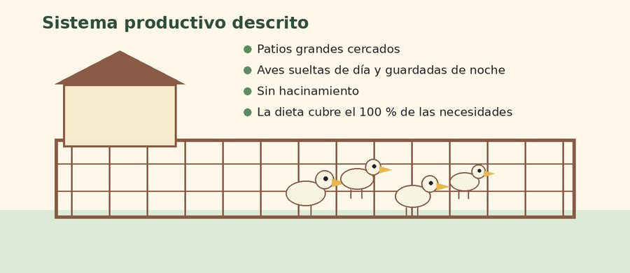
Gallineros de patios grandes, con cercados perimetrales (tejido romboidal) y sin cerramientos. Las aves sueltas de día en un patio cercado con sombra natural y guardadas de noche bajo techo: espacio, aire libre, sin hacinamiento. No usamos calefacción para los animales ya desarrollados (solo para los pollitos). Ni luz para que coman más los que están en engorde.
Como el piso es de tierra, ya gastada, y el picoteo aporta poco, la dieta tiene que cubrir el cien por ciento de lo que el ave necesita.
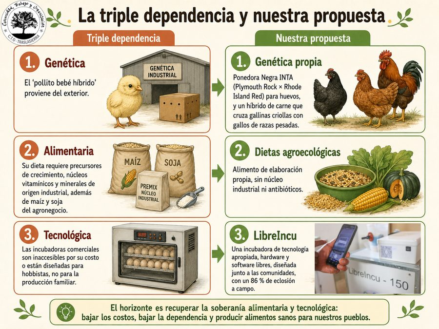
Capítulo 2
Conocer al ave
Una gallina en postura y un pollo en engorde no necesitan lo mismo. Las aves avisan cuando les falta algo: aprender a mirarlas es la primera herramienta. El conocimiento que compartimos a continuación no viene de los manuales: surge de casi diez años de charlas con productores y productoras, de las evaluaciones a campo y del intercambio con técnicos y especialistas que nos acompañan en el territorio.
Los tres tipos de alimentos
- Iniciador: el arranque de la cría, cuando el ave forma hueso y pluma.
- Terminador: la etapa final del engorde.
- Ponedora: la gallina en postura, que necesita mucho calcio para la cáscara. (Y reproductoras: la que da los huevos fértiles para las incubadoras; comen la misma base que la ponedora).
El pollito que crece necesita energía, proteína y minerales para hacer cuerpo. Aprendimos que un mal iniciador condiciona el desarrollo posterior del ave. Las ponedoras necesitan, además, mucho calcio, todos los días. Un déficit en el calcio lo veremos en las cáscaras mal formadas, frágiles o demasiado rugosas.
La vara correcta. Dime con quién me comparas.
Nuestras aves —Cornish puro, la cruza Cornish y criollas pesadas y las criollas— crecen más despacio que el híbrido industrial. La propuesta de alimentación tiene que ser acorde a los objetivos que buscamos: bajar el costo por kilo final del animal faenado, no forzar la velocidad a la que crece.
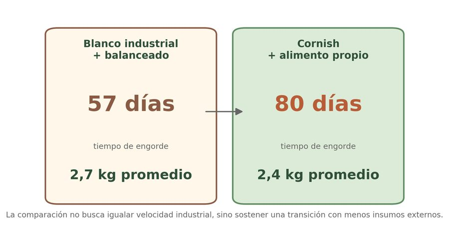
La curva de engorde será más larga, y está bien: esa es nuestra forma de producir alimentos sanos. El alimento que consume es más barato porque nos sacamos de encima los insumos farmacéuticos dolarizados.
Nuestras aves tardan unos veinte días más que el híbrido industrial en llegar a faena. Ese tiempo extra se compensa: al reemplazar los antibióticos y los núcleos vitamínico-minerales importados por insumos de elaboración propia, el costo del alimento baja y el precio final del kilo termina siendo similar al del pollo «doble pechuga». El análisis de costos detallado —que confirme con números esta paridad para cada genética y cada zona— es una tarea que todavía tenemos pendiente y que estamos sistematizando junto a las comunidades.
Lo que sabemos todos: leer la salud animal
| En el engorde miramos | En la postura, el termómetro es el huevo |
|---|---|
| Las plumas. Emplume pobre o lento: faltan minerales o aminoácidos azufrados. | La cáscara. Rugosa, fina o quebradiza cuando falta calcio; lisa y bien formada cuando la dieta está equilibrada. |
| Las patas. Aves que se sostienen mal o con huesos débiles: falta calcio y fósforo. | La forma del huevo. Huevos deformes: falta calcio o fósforo, o hay estrés. |
| El ánimo. Aves apáticas o picaje entre ellas: estrés o carencias. | La cresta. Pálida o chica: falta calcio. |
| La cresta. Una cresta morada o muy opaca puede ser indicador de falta de oxígeno. Una cresta poco brillante: falta de nutrientes. | El ritmo de postura. Si cae, revisar energía, proteína, calcio o luz. |
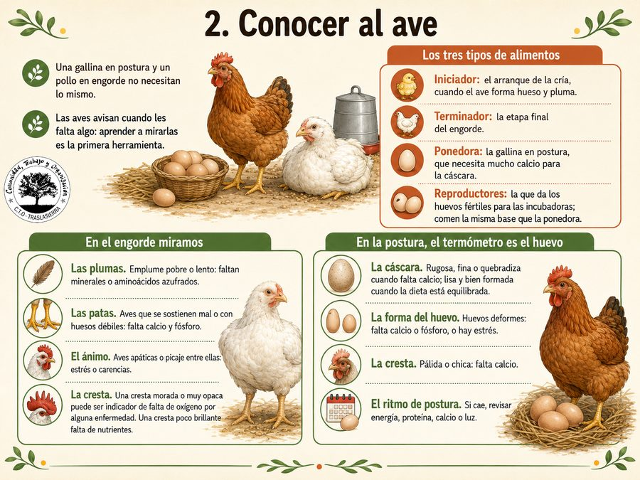
Capítulo 3
Los ingredientes
El alimento se arma con tres elementos: un grano que da energía, una oleaginosa que da proteína y la sal mineral. El probiótico va aparte. El maíz es la energía. El expeller de soja es la proteína con la que el ave hace músculo, pluma y huevo. La sal mineral aporta lo que los granos no traen en cantidad: calcio y fósforo, sobre todo.
Trabajar con lo disponible
Las fórmulas se ajustan a lo que haya en la zona y a los precios. Se puede reemplazar parte del maíz por afrechillo de trigo o sumar harina de girasol, siempre manteniendo el equilibrio entre energía y proteína. La cartilla del INTA Villa Dolores (Gramaglia, 2022) trae combinaciones útiles para cada región.
Las sales y el probiótico los elaboramos. El maíz y la soja los compramos. En buenos momentos productivos, con demanda creciente, llegamos a elaborar 25 toneladas de alimento balanceado por mes.
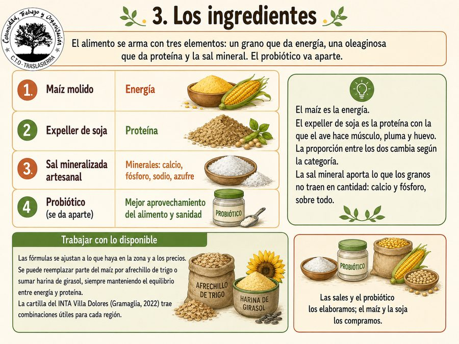
Capítulo 4
Las sales minerales
Las sales minerales aportan el calcio, el fósforo, el sodio y el azufre que los granos no cubren. Se elaboran en el predio.
La ceniza de hueso
Es la fuente principal de calcio y fósforo. Se calcinan huesos a más de 600 °C en un horno de tambor de 200 litros —con aberturas en la base para el tiraje del aire y una parrilla interna que sostiene los huesos— y después se muelen. El hueso aporta entre 24 y 28 % de calcio y entre 8 y 14 % de fósforo.
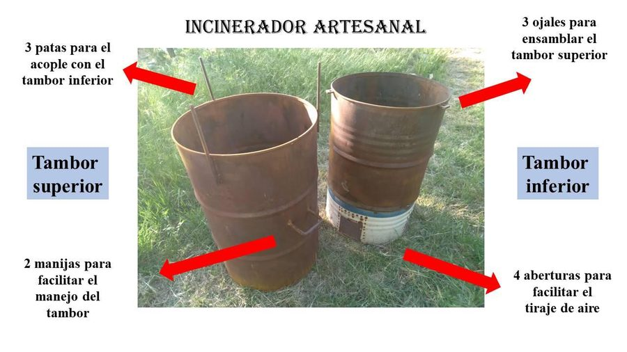
La mezcla — Sal mineralizada
Para 9 kg de sal mineralizada
Se mezcla todo de forma homogénea —a mano, en carretilla o en hormigonera— y se guarda en bolsas, en lugar seco y fresco.
Cuánta poner
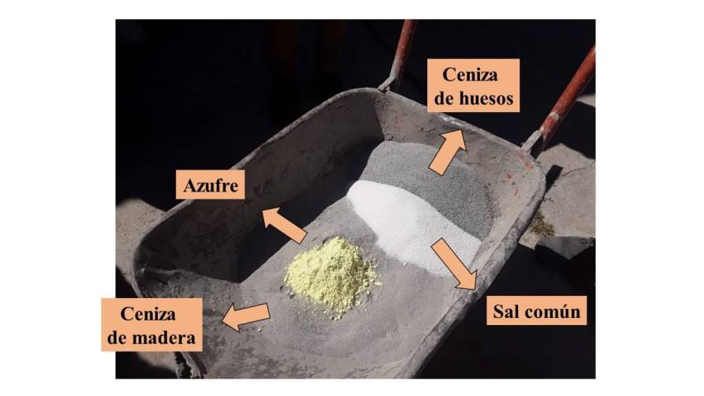
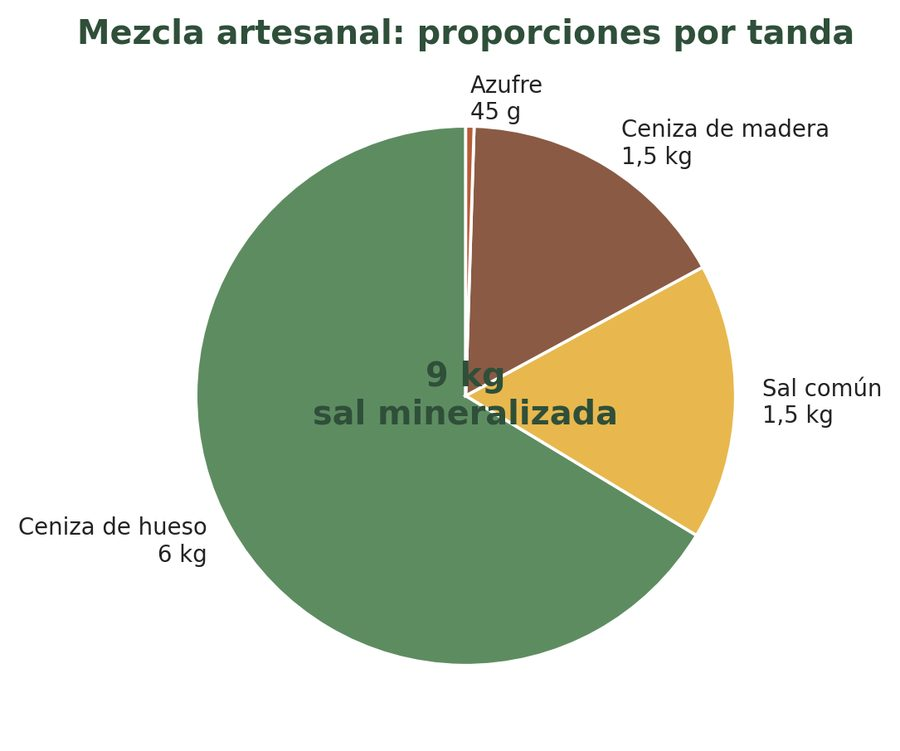
Lo que ajustamos
Al principio la ceniza de hueso era una quinta parte de la mezcla y la inclusión en el balanceado era más baja. En las evaluaciones a campo vimos plumas pobres en los pollos y crestas pálidas en las ponedoras. Subimos la ceniza de hueso a dos tercios de la mezcla y aumentamos la inclusión de calcio en el balanceado. Las ponedoras son las que más calcio piden, porque fabrican cáscaras todos los días.
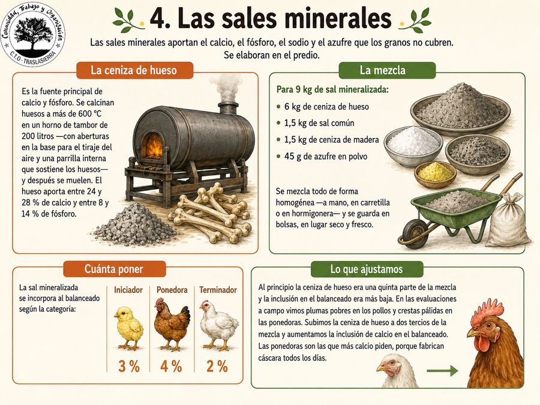
Capítulo 5
Los probióticos
El probiótico mejora el aprovechamiento del alimento y la sanidad de las aves, sin antibióticos. Se elabora en el predio, sólido o líquido.
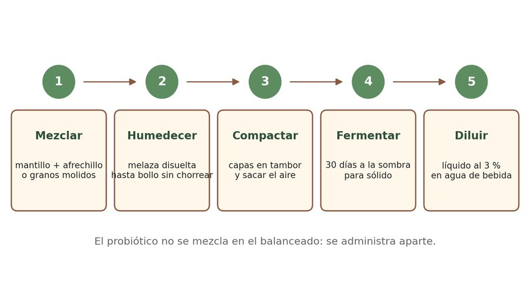
Probiótico sólido
Ingredientes y materiales
- 2 bolsas de mantillo de bosque nativo (hojarasca)
- 4 bolsas de afrechillo o granos molidos (maíz, trigo, sorgo)
- 10 kg de melaza, azúcar o miel
- Un tambor plástico de 200 litros con tapa, un balde de 20 litros y un pisón de madera
Preparación: Se mezcla el mantillo con el afrechillo o el maíz. Se disuelve la melaza o azucar en agua y se incorpora mezclando hasta lograr una humedad pareja: al apretar un puñado se forma un bollo que no chorrea (cerca del 30 % de humedad). Se carga el tambor en capas, compactando con el pisón para sacar el aire. Se tapa y se deja fermentar a la sombra unos 30 días.
Probiótico líquido
Se hace a partir del sólido. En un tambor de 200 litros con 100 litros de agua sin cloro se agregan 10 litros de suero de quesería con melaza disuelta y una bolsa de tela con 5 kg del probiótico sólido. Se completa con agua hasta 200 litros y se deja fermentar 4 días. Se filtra y se diluye al 3 % en el agua de bebida. Dura unos 30 días, y la misma bolsa se reutiliza hasta cuatro veces sumando suero y melaza.
Cómo darlo
Sólido: 20 gramos por animal por día, aparte del balanceado.
Líquido: al 3 % en el agua de bebida.
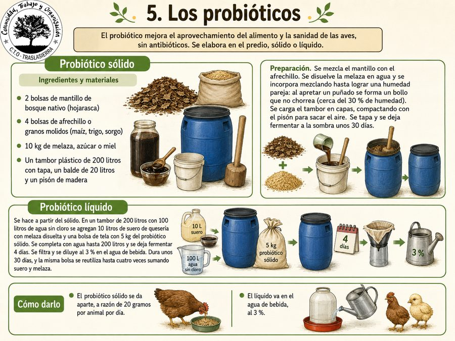
Capítulo 6
Armar el balanceado
El balanceado se prepara sobre una base de 100 kg y se escala según la cantidad de aves. Se mezcla a mano, con carretilla u hormigonera, o a mayor escala en una mezcladora, como en la fábrica que coordina la CTO.
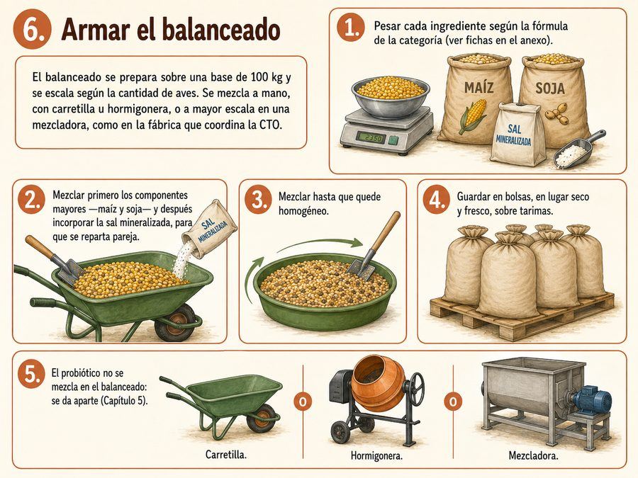
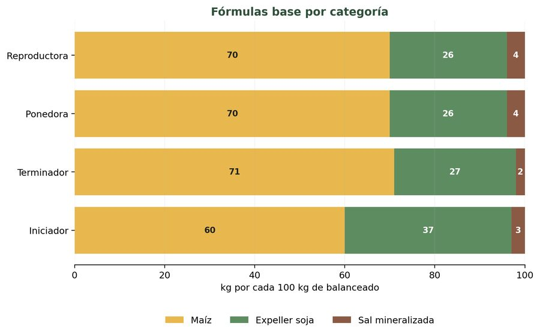
Capítulo 7
Línea de huevos
La fórmula · por 100 kg de balanceado
La misma base alimenta a las ponedoras y a las reproductoras que dan los huevos fértiles para LibreIncu.
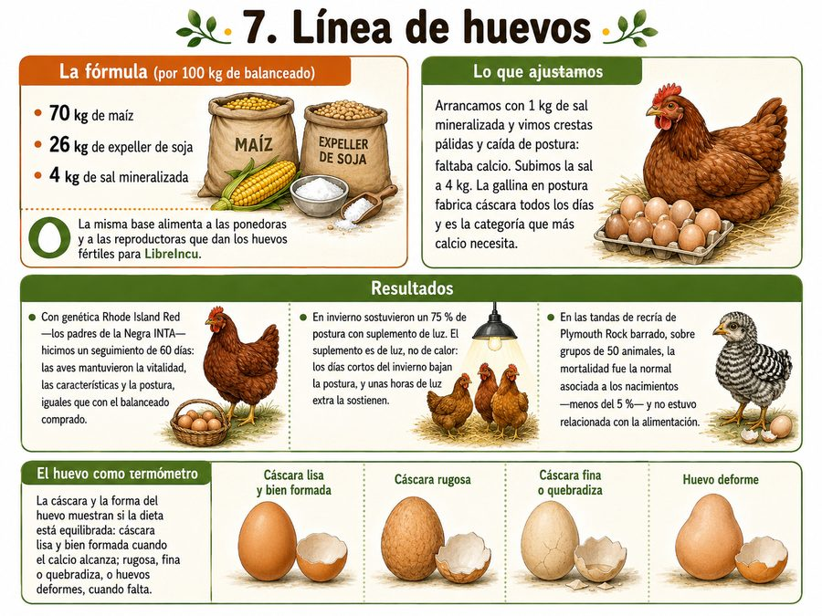
Lo que ajustamos
Arrancamos con 1 kg de sal mineralizada y vimos crestas pálidas y caída de postura: faltaba calcio. Subimos la sal a 4 kg. La gallina en postura fabrica cáscara todos los días y es la categoría que más calcio necesita.
Resultados
Con genética Rhode Island Red —los padres de la Negra INTA— hicimos un seguimiento de 60 días: las aves mantuvieron la vitalidad, las características y la postura, iguales que con el balanceado comprado. En invierno sostuvieron un 75 % de postura con suplemento de luz. El suplemento es de luz, no de calor: los días cortos del invierno bajan la postura, y unas horas de luz extra la sostienen. En las tandas de recría de Plymouth Rock barrado, sobre grupos de 50 animales, la mortalidad fue la normal asociada a los nacimientos —menos del 5 %— y no estuvo relacionada con la alimentación.
El huevo como termómetro
La cáscara y la forma del huevo muestran si la dieta está equilibrada: cáscara lisa y bien formada cuando el calcio alcanza; rugosa, fina o quebradiza, o huevos deformes, cuando falta.
Capítulo 8
Línea de carne
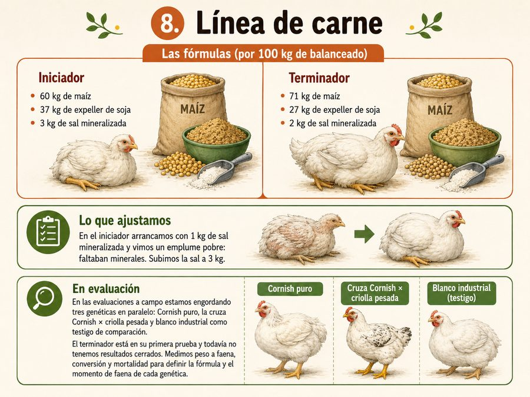
Iniciador · por 100 kg de balanceado
Terminador · por 100 kg de balanceado
Lo que ajustamos
En el iniciador arrancamos con 1 kg de sal mineralizada y vimos un emplume pobre: faltaban minerales. Subimos la sal a 3 kg.
En evaluación
En las evaluaciones a campo estamos engordando tres genéticas en paralelo: Cornish puro, la cruza Cornish × criolla pesada y blanco industrial como testigo de comparación. El terminador está en su primera prueba y todavía no tenemos resultados cerrados. Medimos peso a faena, conversión y mortalidad para definir la fórmula y el momento de faena de cada genética.
Capítulo 9
Aprendizajes y lo que sigue
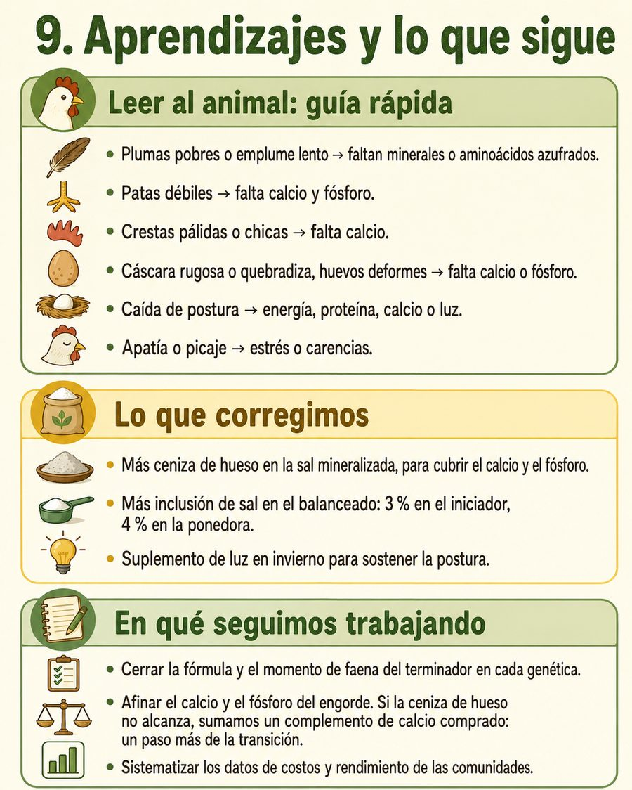
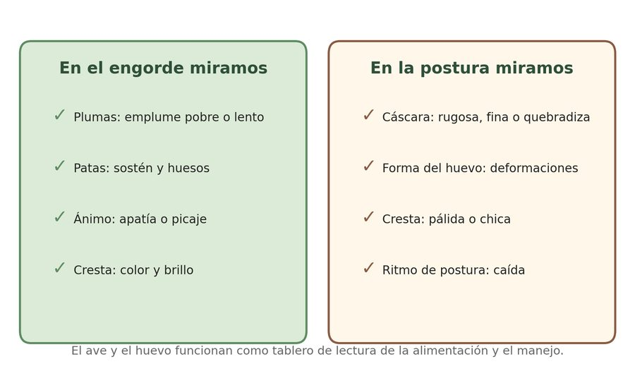
Leer al animal: guía rápida
- Plumas pobres o emplume lento → faltan minerales o aminoácidos azufrados.
- Patas débiles → falta calcio y fósforo.
- Crestas pálidas o chicas → falta calcio.
- Cáscara rugosa o quebradiza, huevos deformes → falta calcio o fósforo.
- Caída de postura → energía, proteína, calcio o luz.
- Apatía o picaje → estrés o carencias.
Lo que corregimos
- Más ceniza de hueso en la sal mineralizada, para cubrir el calcio y el fósforo.
- Más inclusión de sal en el balanceado: 3 % en el iniciador, 4 % en la ponedora.
- Suplemento de luz en invierno para sostener la postura.
En qué seguimos trabajando
- Cerrar la fórmula y el momento de faena del terminador en cada genética.
- Afinar el calcio y el fósforo del engorde. Si la ceniza de hueso no alcanza, sumamos un complemento de calcio comprado: un paso más de la transición.
- Sistematizar los datos de costos y rendimiento de las comunidades.
Referencia rápida
Fichas de fórmulas, dosis y glosario
Fichas de fórmulas · por 100 kg de balanceado
| Categoría | Maíz | Expeller soja | Sal mineral. |
|---|---|---|---|
| Iniciador | 60 kg | 37 kg | 3 kg |
| Terminador | 71 kg | 27 kg | 2 kg |
| Ponedora | 70 kg | 26 kg | 4 kg |
| Reproductora | 70 kg | 26 kg | 4 kg |
Sal mineralizada · por 9 kg
6 kg de ceniza de hueso · 1,5 kg de sal común · 1,5 kg de ceniza de madera · 45 g de azufre en polvo
Dosis
- Probiótico sólido: 20 g por animal por día, aparte del balanceado.
- Probiótico líquido: al 3 % en el agua de bebida.
- Sal mineralizada: 3 % iniciador · 4 % ponedora · 2 % terminador.
Glosario
Expeller de soja
Lo que queda del poroto de soja después de extraerle el aceite por prensado; rico en proteína.
Aminoácidos azufrados
Metionina y cistina; importantes para el emplume.
Núcleo vitamínico-mineral
El complemento industrial que se agrega al balanceado comercial; en este alimento no se usa.
Anexo
Criterios de selección de gallinas reproductoras
Propósito de esta ficha
Ordenar la observación de las futuras reproductoras para seleccionar animales funcionales, sanos, adaptados al sistema de patio abierto y adecuados para sostener huevos fértiles de buena calidad en el marco de LibreIncu. Este material recoge saberes de las productoras organizadas en Comunidad Trabajo y Organización, en diálogo con saberes académicos de técnicos en el campo.
Conformación corporal
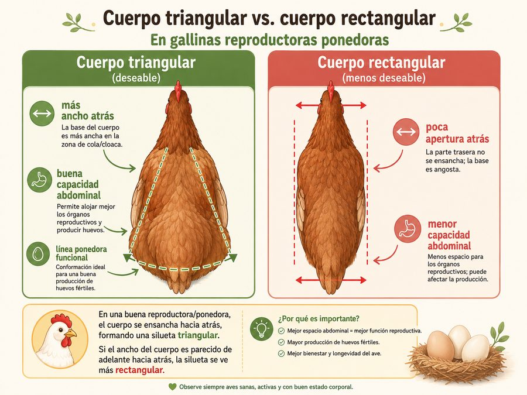
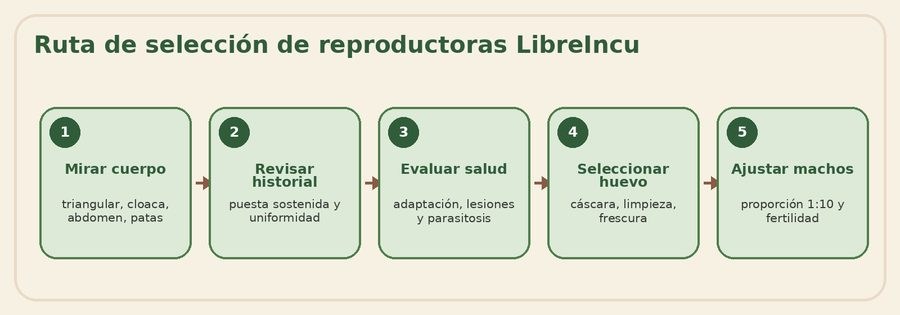
Nota de uso: La selección no se define por un solo rasgo. Conviene mirar el conjunto: cuerpo, historia productiva, salud, adaptación, calidad del huevo y fertilidad del lote.
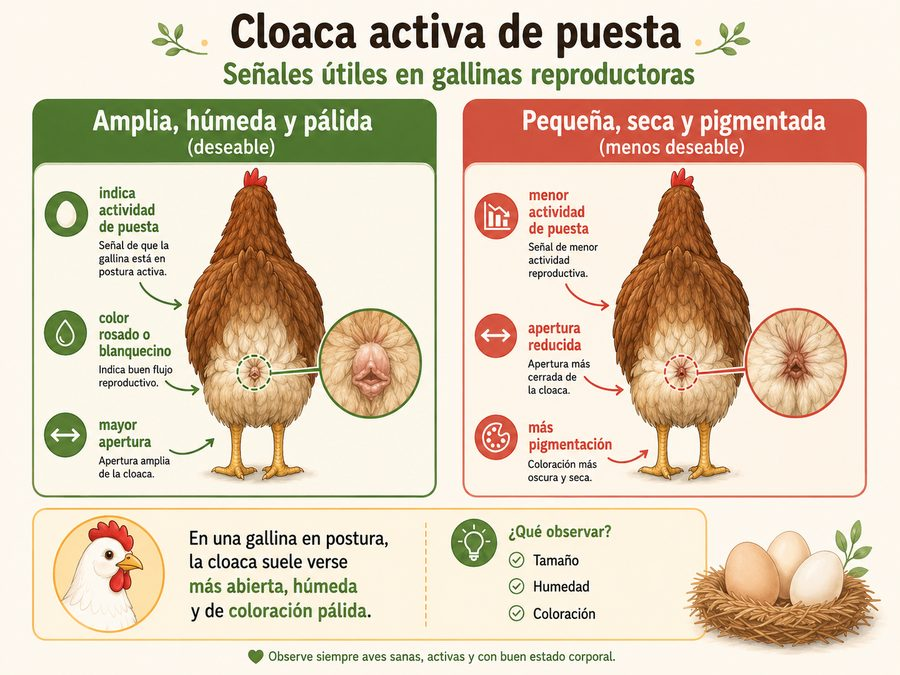
| Criterio de selección | Verificación en campo |
|---|---|
| Cuerpo triangular (base ancha en cola/cloaca), no rectangular — indica línea ponedora funcional. | Apta / Revisar / Descartar |
| Cloaca amplia, húmeda y de coloración pálida (rosada o blanquecina) — señal activa de puesta. | Apta / Revisar / Descartar |
| Abdomen blando, profundo y flexible al palpado — capacidad oviductal desarrollada. | Apta / Revisar / Descartar |
| Patas firmes, buena locomoción, sin deformidades esqueléticas. | Apta / Revisar / Descartar |
Historial y rendimiento productivo
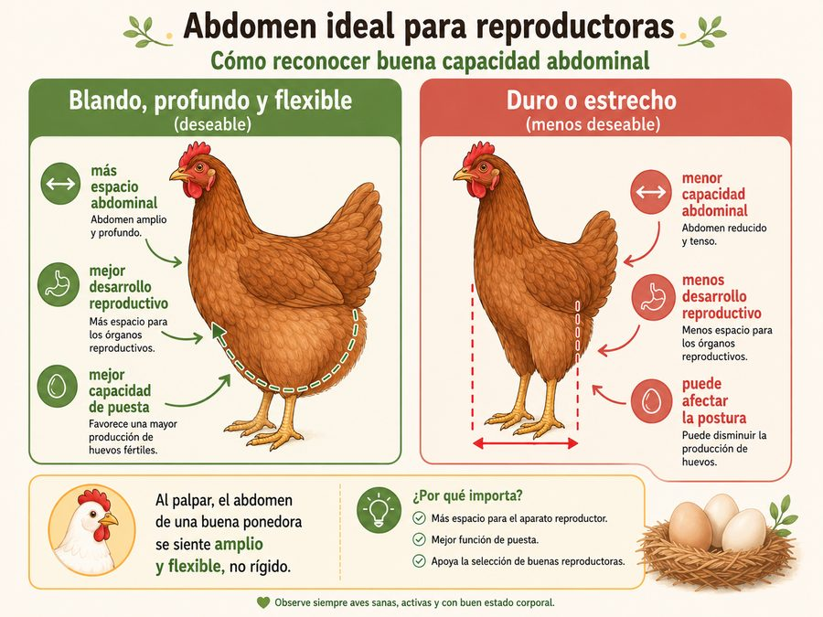
| Criterio de selección | Verificación en campo |
|---|---|
| Producción sostenida: serie de puesta larga, pausas cortas entre ciclos. | Apta / Revisar / Descartar |
| Ausencia de cloquez persistente o intermitente frecuente. | Apta / Revisar / Descartar |
| Buen peso corporal para la edad y uniformidad dentro de la tanda — indicador de curva de crecimiento correcta. | Apta / Revisar / Descartar |
| Inicio de madurez sexual con peso corporal suficiente (5 meses). | Apta / Revisar / Descartar |
Salud y adaptación
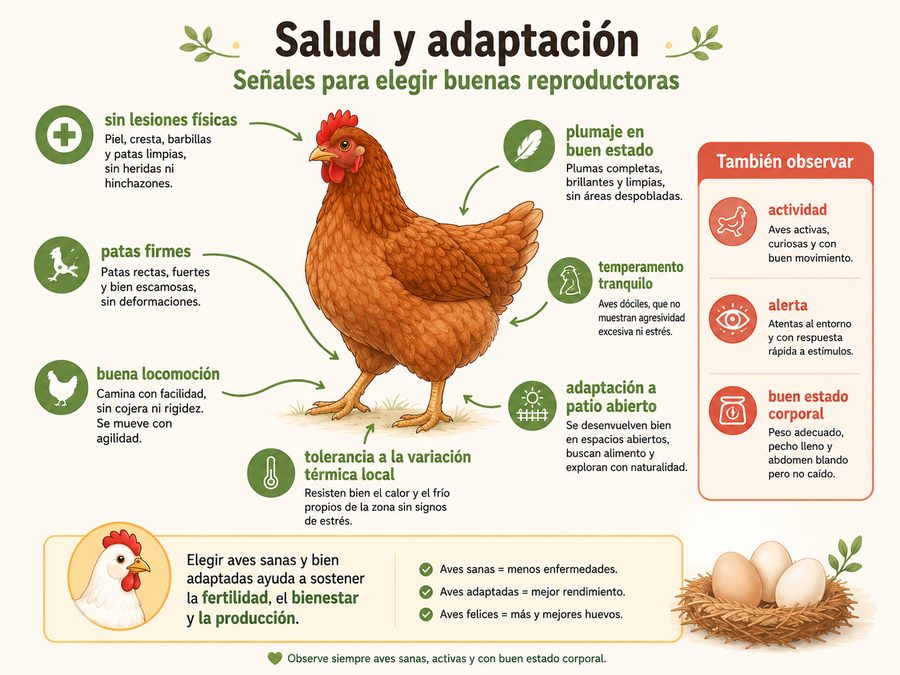
| Criterio de selección | Verificación en campo |
|---|---|
| Sin lesiones físicas, sin signos de enfermedad. | Apta / Revisar / Descartar |
| Buena adaptación al manejo humano (temperamento tranquilo, sin estrés crónico). | Apta / Revisar / Descartar |
| Tolerancia a las condiciones de patio abierto y variación térmica local. | Apta / Revisar / Descartar |
| Resistencia demostrada a parasitosis e infecciones bacterianas habituales de la zona (revisar guano). | Apta / Revisar / Descartar |
Machos (relación con las hembras)
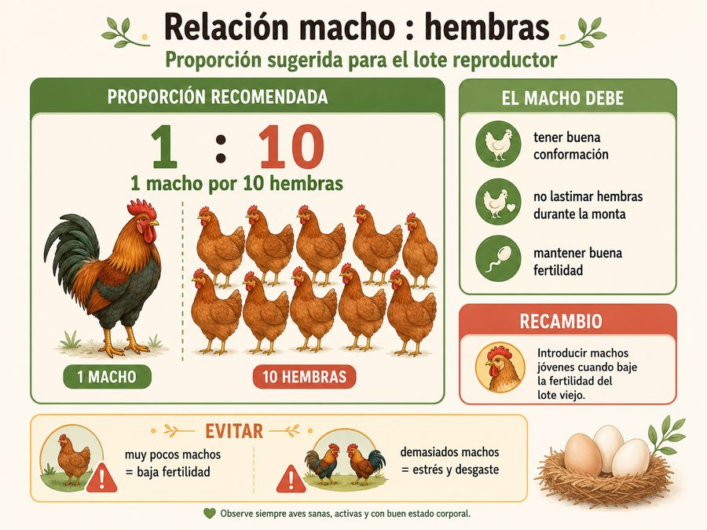
| Criterio de selección | Verificación en campo |
|---|---|
| Proporción de 1:7 a 1:10 (macho:hembra). | Apta / Revisar / Descartar |
| Sin defectos de conformación, sin daño en pico que lastime hembras durante monta. | Apta / Revisar / Descartar |
Huevos aptos para incubación
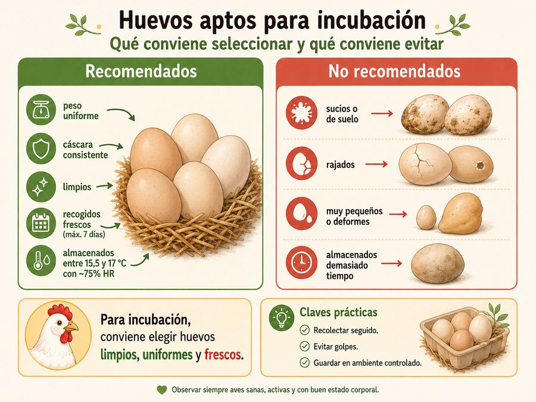
Ficha rápida de campo
Usar esta ficha como apoyo durante la selección del lote. Permite registrar una decisión preliminar sin reemplazar la observación integral del animal.
| Bloque | Indicador principal | Apta ☐ | Revisar ☐ |
|---|---|---|---|
| Conformación corporal | Cuerpo triangular, cloaca activa, abdomen flexible, patas firmes | ||
| Historial productivo | Puesta sostenida, pausas cortas, peso y uniformidad adecuados | ||
| Salud y adaptación | Sin lesiones/enfermedad, temperamento tranquilo, tolerancia al patio | ||
| Calidad del huevo | Peso uniforme, cáscara consistente, huevos limpios y frescos | ||
| Machos | Proporción de 1:7 a 1:10, sin defectos ni daño en pico, recambio si baja fertilidad |